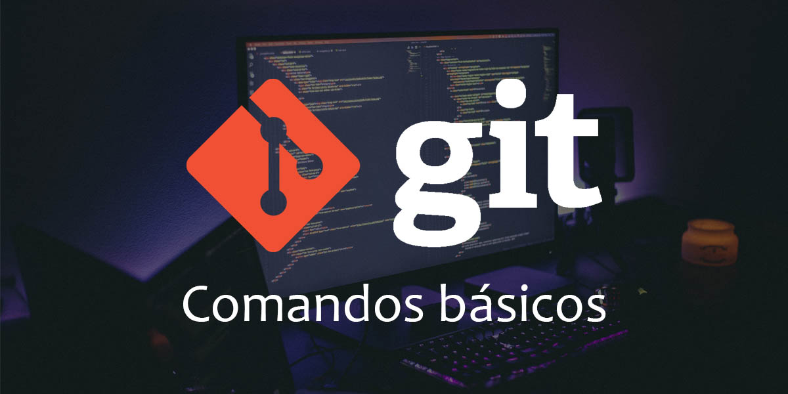

GITHUB COMANDOS

Desde que existe una gran variedad de comandos que puedes utilizar, dominar Git requiere tiempo. Pero algunos comandos se utilizan más frecuentemente. Por tanto, explicaré los 10 comandos de Git más usados que todo desarrollador debería de conocer.
1. Git clone
Git clone es un comando para descargarte el código fuente existente desde un repositorio remoto (como Github, por ejemplo). En otras palabras, Git clone básicamente realiza una copia idéntica de la última versión de un proyecto en un repositorio y la guarda en tu ordenador.
2. Git branch
3. Git checkout
4. Git status
5. Git add
6. Git commit
7. Git push
8. Git pull
9. Git revert
10. Git merge